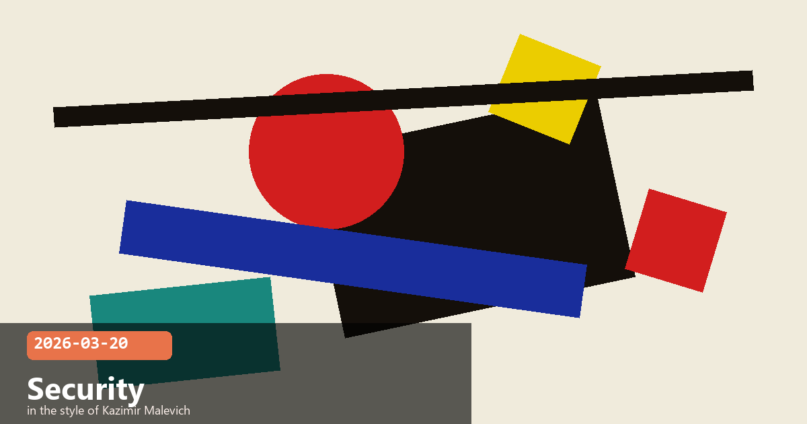

Firefox Security Research, Anthropic Institute, Computer Use & Snowflake Partnership

🧭 Claude Discovers 22 Firefox Security Vulnerabilities
Anthropic and Mozilla ran a two-week experiment in early 2026 to see how well Claude Opus 4.6 could perform real-world security research — and the results turned heads. Working autonomously across hundreds of attempts, Claude identified 22 vulnerabilities in Firefox, representing nearly one-fifth of all high-severity bugs patched in the browser throughout 2025. More than 100 total bugs were found across open-source projects, with the critical findings patched in Firefox 148 (February 2026).
Each bug report included minimal reproducible test cases, making triage fast for the Mozilla team
Despite several hundred exploitation attempts, Claude converted a vulnerability into a working exploit in only 2 cases — highlighting the gap between finding and weaponising bugs
Estimated API cost across the entire exercise: approximately $4,000
All issues were responsibly disclosed and fixed before publication
Takeaway: At ~$4,000 in API spend, Claude surfaced nearly 20% of a major browser's annual high-severity bug crop. That cost-to-impact ratio makes AI-assisted security auditing hard to ignore for any team maintaining large codebases. The low exploit-conversion rate also suggests current models are better at finding flaws than weaponising them — a meaningful safety distinction.
securityvulnerability researchAI red teamingopen source
🧭 The Anthropic Institute — Studying AI's Long-Term Societal Impact
Anthropic formally launched The Anthropic Institute on 11 March 2026 — a dedicated research organisation tasked with understanding how increasingly powerful AI systems will reshape society. Led by co-founder Jack Clark (in a new "Head of Public Benefit" role), the institute sits alongside Anthropic's product and safety teams and is explicitly focused on the questions that don't fit neatly inside a product roadmap: governance, economic disruption, AI values at scale, and the risks of recursive self-improvement.
Three core research teams
Frontier Red Team — stress-tests advanced models for novel catastrophic risks before deployment
Societal Impacts — examines how AI changes employment, democratic institutions, and rule of law (Matt Botvinick, formerly Google DeepMind, leads AI and rule-of-law research)
Economic Research — models the macroeconomic effects of transformative AI, led by Anton Korinek
Why this matters: Most frontier AI labs publish safety research, but The Anthropic Institute is explicitly staffed with economists, social scientists, and legal scholars — not just ML engineers. That interdisciplinary mix signals Anthropic is treating societal risk as a first-class research problem, not an afterthought.
AI safetypolicygovernanceresearch
🧭 Vercept Acquisition — "High-Precision Eyes" for Claude's Computer Use
Anthropic's acquisition of Vercept is the clearest signal yet that the company is serious about making Computer Use a production-grade feature rather than a research preview. Vercept's technology gives Claude dramatically improved visual precision when interacting with desktop UIs — the ability to zoom in on small UI elements, read fine-grained text, and click with pixel-level accuracy before committing an action. Combined with new low-level input primitives in the updated computer_20250124 tool, the gap between "Claude can see a screen" and "Claude can reliably operate software" is narrowing fast.
New capabilities added to the Computer Use API
Zoom Action — inspect small UI elements at high resolution before clicking, reducing mis-clicks on dense interfaces
hold_key / left_mouse_down / left_mouse_up — fine-grained keyboard and mouse control for drag-and-drop and keyboard shortcuts
triple_click — select entire text fields in one action
scroll and wait — better handling of lazy-loaded UIs and slow network responses
Primary use cases: data entry automation, QA testing pipelines, enterprise application orchestration
Getting started: If you're building Computer Use integrations, switch to the computer_20250124 tool type in your API calls to access the full new command set. The Anthropic docs have an updated reference implementation in the computer-use-demo quickstart.
computer useautomationAPIenterprise
🧭 $200M Snowflake Partnership — Claude Powers Enterprise Data Agents
Anthropic and Snowflake announced a multi-year, $200 million expanded partnership bringing Claude models directly into Snowflake's data platform. With over 12,600 global customers across financial services, healthcare, and life sciences, the deal puts Claude at the centre of enterprise data workflows — from natural-language querying through to fully autonomous multi-step analysis agents. The flagship product, Snowflake Intelligence, is powered by Claude Sonnet 4.5 and achieves over 90% accuracy on complex text-to-SQL tasks in Snowflake's internal benchmarks.
What's included
Claude models available via Amazon Bedrock, Google Cloud Vertex AI, and Microsoft Azure — whichever cloud a Snowflake customer already uses
Snowflake Intelligence: autonomous agent that determines what data is needed, pulls from across Snowflake environments, and returns answers — no SQL expertise required from the end user
Cortex AI Functions: query text, images, audio, and tabular data using standard SQL syntax
Joint go-to-market programme targeting regulated industries where data governance is non-negotiable
Designed to help organisations move Claude-powered pilots to production rather than staying in proof-of-concept
Pattern to watch: Both the Snowflake deal and the Claude Marketplace (covered yesterday) reflect the same strategic bet — Anthropic embedding Claude inside the data and workflow tools enterprises already use, rather than asking them to switch to a new platform. Expect more platform-native integrations throughout 2026.